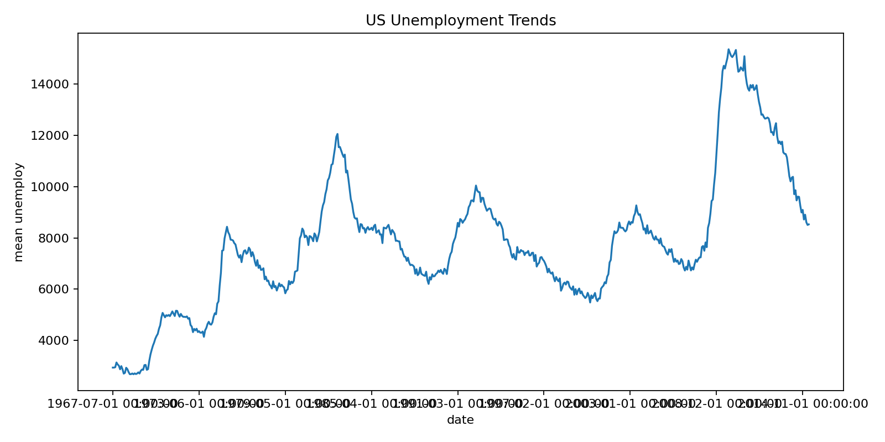

How did the number unemployed change over the recorded period?
The first recorded mean is 2,944.000; the last is 8,526.000. The recorded period, rather than today, defines this comparison.

| segment | rows_used | metric | minimum | maximum |
|---|---|---|---|---|
| 1967-07-01 00:00:00 | 1 | 2944.0 | 2944 | 2944 |
| 1967-08-01 00:00:00 | 1 | 2945.0 | 2945 | 2945 |
| 1967-09-01 00:00:00 | 1 | 2958.0 | 2958 | 2958 |
| 1967-10-01 00:00:00 | 1 | 3143.0 | 3143 | 3143 |
| 1967-11-01 00:00:00 | 1 | 3066.0 | 3066 | 3066 |
| 1967-12-01 00:00:00 | 1 | 3018.0 | 3018 | 3018 |
| 1968-01-01 00:00:00 | 1 | 2878.0 | 2878 | 2878 |
| 1968-02-01 00:00:00 | 1 | 3001.0 | 3001 | 3001 |
| 1968-03-01 00:00:00 | 1 | 2877.0 | 2877 | 2877 |
| 1968-04-01 00:00:00 | 1 | 2709.0 | 2709 | 2709 |
| 1968-05-01 00:00:00 | 1 | 2740.0 | 2740 | 2740 |
| 1968-06-01 00:00:00 | 1 | 2938.0 | 2938 | 2938 |
| 1968-07-01 00:00:00 | 1 | 2883.0 | 2883 | 2883 |
| 1968-08-01 00:00:00 | 1 | 2768.0 | 2768 | 2768 |
| 1968-09-01 00:00:00 | 1 | 2686.0 | 2686 | 2686 |
| 1968-10-01 00:00:00 | 1 | 2689.0 | 2689 | 2689 |
| 1968-11-01 00:00:00 | 1 | 2715.0 | 2715 | 2715 |
| 1968-12-01 00:00:00 | 1 | 2685.0 | 2685 | 2685 |
| 1969-01-01 00:00:00 | 1 | 2718.0 | 2718 | 2718 |
| 1969-02-01 00:00:00 | 1 | 2692.0 | 2692 | 2692 |
| 1969-03-01 00:00:00 | 1 | 2712.0 | 2712 | 2712 |
| 1969-04-01 00:00:00 | 1 | 2758.0 | 2758 | 2758 |
| 1969-05-01 00:00:00 | 1 | 2713.0 | 2713 | 2713 |
| 1969-06-01 00:00:00 | 1 | 2816.0 | 2816 | 2816 |
| 1969-07-01 00:00:00 | 1 | 2868.0 | 2868 | 2868 |
| 1969-08-01 00:00:00 | 1 | 2856.0 | 2856 | 2856 |
| 1969-09-01 00:00:00 | 1 | 3040.0 | 3040 | 3040 |
| 1969-10-01 00:00:00 | 1 | 3049.0 | 3049 | 3049 |
| 1969-11-01 00:00:00 | 1 | 2856.0 | 2856 | 2856 |
| 1969-12-01 00:00:00 | 1 | 2884.0 | 2884 | 2884 |
| 1970-01-01 00:00:00 | 1 | 3201.0 | 3201 | 3201 |
| 1970-02-01 00:00:00 | 1 | 3453.0 | 3453 | 3453 |
| 1970-03-01 00:00:00 | 1 | 3635.0 | 3635 | 3635 |
| 1970-04-01 00:00:00 | 1 | 3797.0 | 3797 | 3797 |
| 1970-05-01 00:00:00 | 1 | 3919.0 | 3919 | 3919 |
| 1970-06-01 00:00:00 | 1 | 4071.0 | 4071 | 4071 |
| 1970-07-01 00:00:00 | 1 | 4175.0 | 4175 | 4175 |
| 1970-08-01 00:00:00 | 1 | 4256.0 | 4256 | 4256 |
| 1970-09-01 00:00:00 | 1 | 4456.0 | 4456 | 4456 |
| 1970-10-01 00:00:00 | 1 | 4591.0 | 4591 | 4591 |
| 1970-11-01 00:00:00 | 1 | 4898.0 | 4898 | 4898 |
| 1970-12-01 00:00:00 | 1 | 5076.0 | 5076 | 5076 |
| 1971-01-01 00:00:00 | 1 | 4986.0 | 4986 | 4986 |
| 1971-02-01 00:00:00 | 1 | 4903.0 | 4903 | 4903 |
| 1971-03-01 00:00:00 | 1 | 4987.0 | 4987 | 4987 |
| 1971-04-01 00:00:00 | 1 | 4959.0 | 4959 | 4959 |
| 1971-05-01 00:00:00 | 1 | 4996.0 | 4996 | 4996 |
| 1971-06-01 00:00:00 | 1 | 4949.0 | 4949 | 4949 |
| 1971-07-01 00:00:00 | 1 | 5035.0 | 5035 | 5035 |
| 1971-08-01 00:00:00 | 1 | 5134.0 | 5134 | 5134 |
Unemploy is a count in thousands, not an unemployment rate; population changes matter.
Validate turning points against official labour statistics.